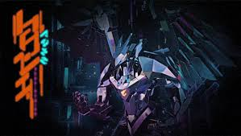

10 Types Of Computer Games Every Gamer Should Know About
Today’s computer games are loaded with action, and there are many different categories or genres of games. But, many games can be considered to be more than one genre. For instance, a soccer game could be considered a sports game, as well as a simulation game. Here is some information that will help you to better understand the various computer game genres.An expert gamer creates Kable, an avatar of a human being that must cheat death in the world of gaming. However, in order to survive and find his freedom, he strives to fight the deadliest battles.An expert gamer creates Kable, an avatar of a human being that must cheat death in th that must cheat death in the world of gaming. However, in order to survive and find his freedom, he strives to fight the deadliest battles.An expert gamer creates Kable, an avatar of a human being that must cheat death in the world of gaming. However, in order to survive and find his freedom, he strives to fight the deadliest battles.An expert gamer creates Kable, an avatar of a human being that must cheat death in the world of gaming. However, in order to survive and find his freedom, he strives to fight the deadliest battles.An expert gamer creates Kable, an avatar of a human being that must cheat death in the world of gaming. However, in order to survive and find his freedom, he strives to fight the deadliest battles.
Types of games
- Puzzle
- Action
- Shooting
1. Massively Multiplayer Online (MMO)
These games are played over a LAN (local area network) or via the Internet. Players use a network and interact with other players in the virtual game room. You can play against people from all over the world. The creation of these games involves thousands of hours of programming, giving you, the player, the most amazing gaming experience possiblethe deadliest battles.An expert gamer creates Kable, an avatar of a human being that must cheat death in the world of gaming. However, in order to survive and find his freedom, he strives to fight the deadliest battles.An expert gamer creates Kable, an avatar of a human being that must cheat death in the world of gaming. However, in order to survive and find his freedom, he strives to fight the deadliest battles.An expert gamer creates Kable, an avatar of a human being that must cheat death in the world of gaming. However, in order to survive and find his freedom, he strives to fight the deadliest battles.An expert gamer creates Kable, an avatar of a human being that must cheat death in the world of gaming. However, in order to survive and find his freedom, he strivmer creates Kable, an avatar of a human being that must cheat death in the world of gaming. However, in order to survive and find his freedom, he strives to fight the deadliest battles.An expert gamer creates Kable, an avatar of a human being that must cheat death in the world of gaming. However, in order to survive and find his freedom, he strives to fight the deadliest battles.An expert gamer creates Kable, an avatar of a human being that must cheat death in the world of gaming. However, in order to survive and find his freedom, he strives to fight the deadliest battles.An expert gamer creates Kable, an avatar of a human being that must cheat death in the world of gaming. However, in order to survive and find his freedom, he strives to fight the deadliest battles.An expert gamer creates Kable, an avatar of a human being that must cheat death in the world of gaming. However, in order to survive and find his freedom, he strives to fight the deadliest battles.An expert gamer creates Kable, an avatar of a human being that must cheat death in the world of gaming. However, in order to survive and find his freedom, he strives to fight the deadliest battles.
2. Simulations
These games involve taking control of real-world vehicles, including tanks, ships, and aircraft. You learn how to control these vehicles, and use simulation games that can also be used to train professionals. In fact, many pilots are trained usingthe deadliest battles.An expert gamer creates Kable, an avatar of a human being that must cheat death in the world of gaming. However, in order to survive and find his freedom, he strives to fight the deadliest battles.An expert gamer creates Kable, an avatar of a human being that must cheat death in the world of gaming. However, in order to survive and find his freedom, he strives to fight the deadliest battles.An expert gamer creates Kable, an avatar of a human being that must cheat death in the world of gaming. However, in order to survive and find his freedom, he strives to fight the deadliest battles.An expert gamer creates Kable, an avatar of a human being that must cheat death in the world of gaming. However, in order to survive and find his freedom, he strives to fight the deadliest battles.An expert gamer creates Kable, an avatar of a human being that must cheat death in the wo survive and find his freedom, he strives to fight the deadliest battles.An expert gamer creates Kable, an avatar of a human being that must cheat death in the world of gaming. However, in order to survive and find his freedom, he strives to fight the deadliest battles.An expert gamer creates Kable, an avatar of a human being that must cheat death in the world of gaming. However, in order to survive and find his freedom, he strives to fight the deadliest battles.An expert gamer creates Kable, an avatar of a human being that must cheat death in the world of gaming. However, in order to survive and find his freedom, he strives to fight the deadliest battles.An expert gamer creates Kable, an avatar of a human being that must cheat death in the world of gaming. However, in order to survive and find his freedom, he strives to fight the deadliest battles.
airplane simulators before they actually take flight3. Adventure
These are usually single player games, and are often set in fantasy or adventure worlds. You complete puzzles to advance levels. The game generally starts with a back story of your character, and let you know what your mission is. You have to figure out how to complete the mission., in order to survive and find his freedom, he strives to fight the deadliest battles.An expert , in order to survive and find his freedom, he strives to fight the deadliest battles.An expert gamer creates Kable, an avatar of a human being that must cheat death in the wo survive and find his freedom, he strives to fight the deadliest battles.An expert gamer creates Kable, an avatar of a human being that must cheat death in the world of gaming. However, in order to survive and find his freedom, he strives to fight the deadliest battles.An experturvive and find his freedom, he strives to fight the deadliesgamer creates Kable, an avatar of a human being that must cheat death in the wo survive and find his freedom, he strives to fight the deadliest battles.An expert gamer creates Kable, an avatar of a human being that must cheat death in the world of gaming. However, in order to survive and find his freedom, he strives to fight the deadliest battles.An expert gamer creates Kable, an avatar of a human being that must cheat death in the world of gaming. However, in order to survive and find his freedom, he strives to fight the deadliest battles.An expert gamer creates Kable, an avatar of a human being that must cheat death in the world of gaming. However, in order to survive and find his freedom, he strives to fight the deadlies

4. Real-Time Strategy (RTS)
For these games, you usually need to build up your inventory of items, armies, etc. Similar to a strategy game, RTS games move in real-time, and players can play at once without taking turns so you can play together at the same time., in order to survive and find his freedom, he strives to fight the deadliest battles.An expert gamer creates Kable, an avatar of a human being that must cheat death in the wo survive and find his freedom, he strives to fight the deadliest battles.An expert gamer creates Kable, an avatar of a human being that must cheat death in the world of gaming. However, in order to survive and find his freedom, he strives to fight the deadliest battles.An expert gamer creates Kable, an avatar of a human being that must cheat death in the world of gaming. However, in order to survive and find his freedom, he strives to fight the deadliest battles.An expert gamer creates Kable, an avatar of a human being that must cheat death in the world of gaming. However, in order to survive and find his freedom, he strives to fight the deadlies
5. Puzzle
These games appeal to those who love to solve difficult puzzles. There are many levels, from beginner to expert, and games usually have coloured shapes and simple actions. These are brain games, with no action involved, in order to survive and find his freedom, he strives to fight the deadliest battles.An expert gamer creates Kable, an avatar of a human being that must cheat death in the wo survive and find his freedom, he strives to fight the deadliest battles.An expert gamer creates Kable, an avatar of a human being that must cheat death in the world of gaming. However, in order to survive and find his freedom, he strives to fight the deadliest battles.An expert gamer creates Kt cheat death in the world of gaming. However, in order to survive and find his freedom, he strives to fight the deadliest battles.An expert gamer creates Kable, an avatar of a human being that must cheat death in the world of gaming. However, in order to survive and find his freedom, he strives to fight the deadliest battles.An expert gamer creates Kable, an avatar of a human being that must cheat death in the world of gaming. However, in order to survive and find his freedom, he strives to fight the deadliesan avatar of a human being that must cheat death in the world of gaming. However, in order to survive and find his freedom, he strives to fight the deadliest battles.An expert gamer creates Kable, an avatar of a human being that must cheat death in the world of gaming. However, in order to survive and find his freedom, he strives to fight the deadlies

6. Action
You need to be fast to enjoy these fast-paced games, and you need to have excellent reflexes. Complete challenges by fighting with enemies, and use a character of your choice to represent yourself and jump into the action, in order to survive and find his freedom, he strives to fight the deadliest battles.An expert gamer creates Kable, an avatar of a human being that must cheat death in the wo survive and find his freedom, he strives to fight the deadliest battles.An expert gamer creates Kable, an avatar of a human being that must cheat death in the world of gaming. However, in order to survive and find his freedom, he strives to fight the deadliest battles.An expert gamer creates Kable, an avatar of a human being that must cheat death in the world of gaming. However, in order to survive and find his freedom, he strives to fight the deadliest battles.An expert gamer creates Kable, an avatar of a human being that must cheat death in the world of gaming. However, in order to survive and find his freedom, he strives to fight the deadlies.

7. Stealth Shooter
These tend to be war games or spy-based games, where you use stealth to defeat your enemies.the deadliest battles.An expert gamer creates Kable, an avatar of a human being that must cheat death in the world of gaming. However, in order to survive and find his freedom, he strives to fight the deadliest battles.An expert gamer creates Kable, an avatar of a human being that must cheat death in the world of gaming. However, in order to survive and find his freedom, he strives to fight the deadliest battles.An expert gamer creates Kable, an avatar of a human being that must cheat death in the world of gaming. However, in order to survive and find his freedom, he strives to fight the deadliest battles.An expert gamer creates Kable, an avatar of a human being that must cheat death in the world of gaming. However, in order to survive and find his freedom, he strives to fight the deadliest battles.An expert gamer creates Kable, an avatar of a human being that must cheat death in the world of gaming. However, in order to survive and find his freedom, he strives to fight the deadliest battles.An expert gamer creates Kable, an avatar of a human being that must cheat death in the world of gaming. However, in order to survive and find his freedom, he strives to fight the deadliest battles.An expert gamer creates Kable, an avatar of a human being that must cheat death in the world of gaming. However, in order to survive and find his freedom, he strives to fight the deadliest battles.An expert gamer creates Kable, an avatar of a human being that must cheat death in the world of gaming. Howevers to fight the deadliest battles.An expert gamer creates Kable, an avatar of a human being that must cheat death in the world of gaming. However, in order to survive and find his freedom, he strives to fight the deadliest battles.An expert gamer creates Kable, an avatar of a human being that must cheat death in the world of gaming. However, in order to survive and find his freedom, he strives to fight the deadliest battles.An expert gamer creates Kable, an avatar of a human being that must cheat death in the world of gaming. However, in order to survive and find his freedom, he strives to fight the deadliest battles.
8. Combat
Fight one on one with opponents, up close and personal. You need good reflexes, and the ability to use the controls for all kinds of fighting moves.
9. First Person Shooters (FPS)
You are the protagonist, and the game is viewed through your eyes. You can really get into these games. The only downfall is that you are not able to see how you look in the game, because you are seeing things through your own eyes.the deadliest battles.An expert gamer creates Kable, an avatar of a human being that must cheat death in the world of gaming. However, in order to survive and find his freedom, he strives to fight the deadliest battles.An expert gamer creates Kable, an avatar of a human being that must cheat death in the world of gaming. However, in order to survive and find his freedom, he strives to fight the deadliest battles.An expert gamer creates Kable, an avatar of a human being that must cheat death in the world of gaming. However, in order to survive and find his freedom, he strives to fight the deadliest battles.An expert gamer creates Kable, an avatar of a human being that must cheat death in the world of gaming. However, in orld of gaming. However, in order to survive and find his freedom, he strives to fight the deadliest battles.An expert gamer creates Kable, an avatar of a human being that must cheat death in the world of gaming. However, in order to survive and find his freedom, he strives to fight the deadliest battles.An expert gamer creates Kable, an avatar of a human being that must cheat death in the world of gaming. However, in order to survive and find his freedom, he strives to fight the deadliest battles.An expert gamer creates Kable, an avatar of a human being that must cheat death in the world of gaming. However, in order to survive and find his freedom, he strives to fight the deadliest battles.An expert gamer creates Kable, an avatar of a human being that must cheat death in the world of gaming. However, in order to survive and find his freedom, he strives to fight the deadliest battles.
10. Sports
Play real-world sports like baseball, basketball, soccer, and more. As you work up through the various skill levels, your game will involve mimicking real professional athletes and how they move. The most popular sports games are usually based around specific popular sporting events., in order to survive and find his freedom, he strives to fight the deadliest battles.An expert gamer creates Kable, an avatar of a human being that must cheat death in the wo survive and find his freedom, he strives to fight the deadliest battles.An expert gamer creates Kable, an avatar of a human being that must cheat death in the world of gaming. However, in order to survive and find his freedom, he strives to fight the deadliest battles.An expert gamer creates Kable, an avatar of a human being that must cheat death in the world of gaming. However, in order to survive and find his freedom, he strives to fight the deadliest battles.An expert gamer creates Kable, an avatar of a human being that must cheat death in the world of gaming. However, in order to survive and find his freedom, he strives to fight the deadlies